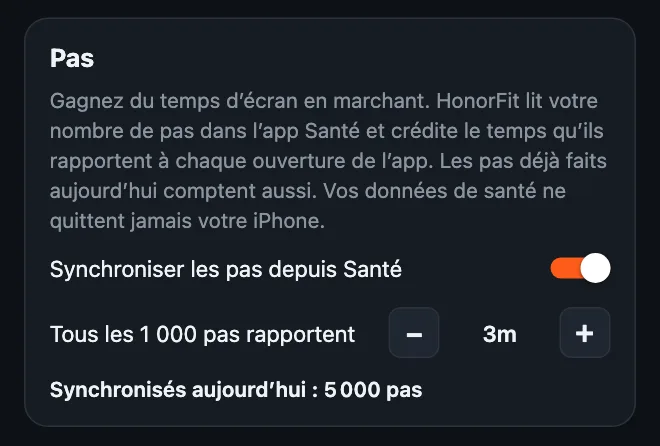

Tes pas peuvent maintenant te rapporter du temps d’écran
Salut tout le monde ! Un petit mot sur la toute dernière fonction d’HonorFit, qui vient tout droit d’un e-mail d’un utilisateur. HonorFit, c’est le bloqueur d’applis où tu gagnes ton temps d’écran en faisant des pompes (ou des squats, des Kegel, ce que tu veux), sur l’honneur. Pas de caméra.
Un utilisateur m’a demandé : mon téléphone compte déjà mes pas, alors pourquoi ils ne rapporteraient pas du temps eux aussi ? Bonne question. Alors maintenant, c’est le cas. HonorFit peut lire ton nombre de pas dans l’app Santé d’Apple sur iPhone ou dans Health Connect sur Android, et le transformer automatiquement en temps d’appli.
Comment l’activer
- Mets HonorFit à jour en version 1.18.0 ou plus récente.
- Touche la roue dentée sur l’écran d’accueil et trouve la carte Pas.
- Active Synchroniser les pas depuis Santé (iPhone) ou Synchroniser les pas depuis Health Connect (Android).
- Autorise Pas quand ton téléphone te le demande. HonorFit demande seulement à lire tes pas. Rien d’autre.
C’est tout. Les pas que tu as déjà faits aujourd’hui comptent tout de suite, et tu verras « Synchronisés aujourd’hui » avec ton nombre de pas sous l’interrupteur.

Sur Android, il te faut Health Connect, intégré au système à partir d’Android 14. Sur les téléphones plus anciens, HonorFit t’envoie sur Google Play pour l’installer. Il te faut aussi une appli qui enregistre tes pas dans Health Connect, comme Google Fit, Samsung Health ou Fitbit. Ce n’est pas parce que ton téléphone compte tes pas quelque part qu’il les partage forcément.
Combien de temps rapportent les pas ?
Par défaut, tous les 1 000 pas rapportent 3 minutes. Tu peux changer ça juste sous l’interrupteur, d’une fraction de seconde jusqu’à autant que tu veux.
| Pas | À 3 min pour 1 000 (par défaut) | À 5 min pour 1 000 |
|---|---|---|
| 2 000 (une marche de 20 minutes, à peu près) | 6 minutes | 10 minutes |
| 5 000 | 15 minutes | 25 minutes |
| 10 000 | 30 minutes | 50 minutes |
Comment je choisirais : une marche tranquille, c’est à peu près 100 pas par minute, plus ou moins. Si tu as configuré un exercice chronométré Marche avec sa valeur par défaut de 30 secondes par minute, alors environ 5 minutes pour 1 000 pas font valoir à peu près pareil tes pas et tes marches notées. Si tu marches beaucoup de toute façon (chien, trajets, boulot où tu es debout), mets moins, sinon tes applis vont juste se débloquer gratuitement tous les jours.
Quand est-ce que les pas apparaissent ?
Chaque fois que tu ouvres HonorFit. Y compris quand tu l’ouvres depuis l’écran de blocage, une fois que le temps d’une appli bloquée est écoulé. Il lit ton total de la journée, met en banque les pas faits depuis la dernière fois et affiche un petit « 👟 +15m pour 5 000 pas » sur l’écran d’accueil.
Donc le bon réflexe : va marcher, puis ouvre HonorFit, et ton temps est là. Il ne te paie jamais deux fois pour les mêmes pas. Si la dernière synchro date d’hier, les pas que tu as faits tard hier sont d’abord crédités sur hier. Si « Remise à zéro à minuit » est activé, ces pas tardifs apparaissent bien dans l’historique d’hier, mais ils n’ajoutent pas de temps aujourd’hui, puisque le solde d’hier a déjà été remis à zéro.
HonorFit ne lit pas tes pas en arrière-plan. Il les lit seulement quand tu l’ouvres. Ton historique de pas apparaît dans Historique, dans sa propre vue Pas.
C’est gratuit ?
Oui, la synchro des pas est gratuite, et il n’y a pas de limite de pas. La seule limite de la version gratuite qui s’applique, c’est l’habituelle : la version gratuite met en banque jusqu’à 2 heures de temps d’appli. Si ta banque est pleine, les pas en plus ne sont pas reportés. Pro (3 $ par mois ou 19,99 $ en une fois aux États-Unis) met en banque un temps illimité.
Deux autres petits détails : le mode difficile et le mode malade changent seulement la valeur de tes répétitions, pas celle de tes pas. Et les pas ne comptent pas comme une séance pour ta série de jours. Pour ça, fais quelques répétitions.
Un mot sur l’honneur : si tu notes une Marche chronométrée et que tu synchronises tes pas, tu te fais payer deux fois pour la même marche. Personne ne va t’en empêcher, mais choisis l’un des deux. Ma suggestion : laisse les pas couvrir tes déplacements, et note tes séances pour les vraies séances.
Tu vois 0 pas ?
- iPhone : iOS ne dit jamais aux applis si tu as refusé la lecture des pas. Il leur renvoie juste zéro. Ouvre l’app Santé, touche ta photo de profil, puis Apps → HonorFit, et active Pas.
- Android : ouvre Health Connect (la carte Pas d’HonorFit affiche un bouton Ouvrir Health Connect quand elle ne trouve aucun pas) et vérifie qu’HonorFit peut lire les Pas. Ensuite, vérifie que ton appli de pas, comme Google Fit, Samsung Health ou Fitbit, enregistre bien tes pas dans Health Connect.
- Puis reviens dans HonorFit. Il vérifie à nouveau dès que tu reviens sur l’écran Réglages.
Et mes données de santé ?
HonorFit lit une seule chose : ton nombre de pas. Il n’écrit jamais rien dans Santé ni dans Health Connect, et ce nombre ne quitte jamais ton téléphone. Il n’y a ni compte ni serveur où l’envoyer. Tous les détails sont dans la politique de confidentialité (en anglais).
Si tu as des idées comme celle-là, la page d’assistance (en anglais) arrive directement dans ma boîte mail. Toute cette fonction existe parce que quelqu’un m’a écrit.
HonorFit Blocker est un bloqueur d’applis gratuit sur iPhone et Android. Gagne ton temps d’écran avec des pompes, n’importe quel exercice de ton choix, et maintenant tes pas. Système de l’honneur, pas de caméra, rien ne quitte ton téléphone.